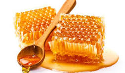

Madu adalah salah satu produk alami yang paling tua yang diketahui manusia. Penggunaan madu telah tercatat sejak ribuan tahun lalu, mulai dari Mesir kuno, Yunani, hingga Tiongkok, digunakan sebagai makanan, obat, dan bahan ritual.
1. Madu di Zaman Kuno
Di Mesir kuno, madu digunakan sebagai persembahan untuk dewa dan sebagai bahan pengawet mumi. Bangsa Yunani dan Romawi menggunakannya untuk pengobatan luka dan campuran obat herbal.
2. Madu di Dunia Timur
Di Tiongkok dan India, madu digunakan sebagai suplemen kesehatan dan campuran ramuan herbal untuk meningkatkan vitalitas dan daya tahan tubuh.
3. Madu di Era Modern
Saat ini, madu tetap populer sebagai pemanis alami, obat herbal, dan bahan kosmetik. Ilmu medis modern juga meneliti madu untuk sifat antibakteri dan antioksidannya.
“Madu adalah warisan alam yang telah melintasi zaman, tetap relevan untuk kesehatan dan kesejahteraan manusia.”